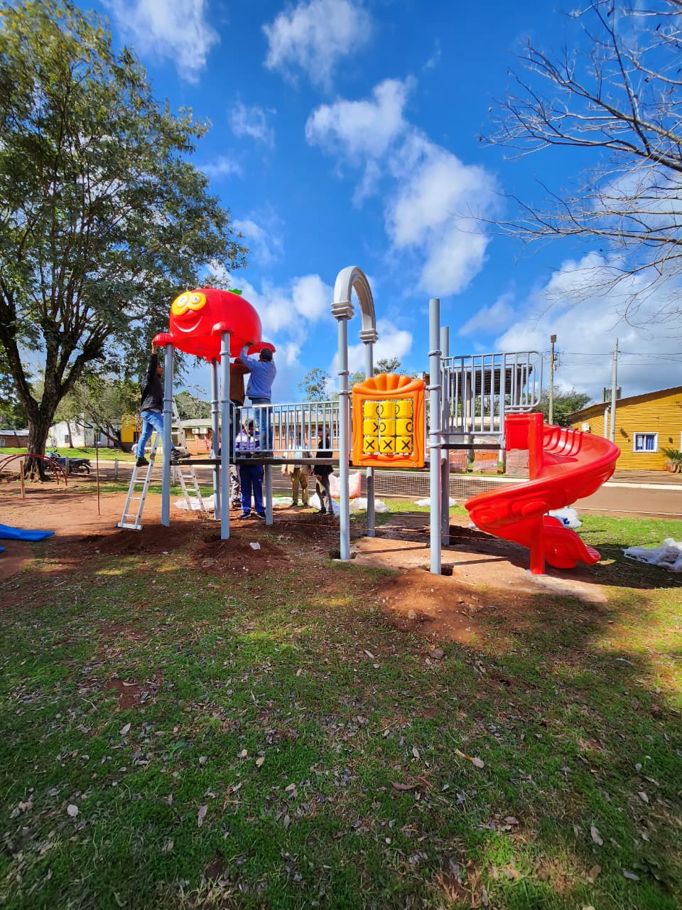

Mapa de
Intervención
Visualice las calles y zonas donde el equipo municipal ha realizado trabajos de asfaltado, bacheo y nivelación.

📍 Mapa actualizado de gestión 2024
Espacios de Recreación
Instalación de nuevos juegos en la Plaza Central para el disfrute de nuestras familias.

.jpg)
.jpg)
Trabajos en el
Cerro Santa Ana
Mejora de accesos estratégicos para vecinos y establecimientos turísticos.
- Comunidad Miri
- Escuela 166
- Cabañas DyD y La Victoria
- Itatí Juañuk
.jpg)
.jpg)
.jpg)
.jpg)
Mantenimiento de Manzanas Urbanas
Sectores 203, 204, 235 y 236
Tareas de nivelación de suelo y perfilado de calles de tierra para garantizar la transitabilidad segura incluso en días de lluvia.

.jpg)
Mantenimiento de Manzanas Urbanas
Sectores 203, 204, 235 y 236
Tareas de nivelación de suelo y perfilado de calles de tierra para garantizar la transitabilidad segura incluso en días de lluvia.
.jpg)

Manzanas 236 y 245
Intervención profunda con maquinaria pesada para la recuperación de caminos de tierra, cuneteo y compactación en sectores estratégicos.